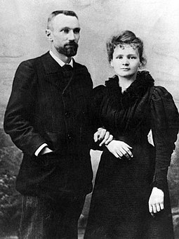
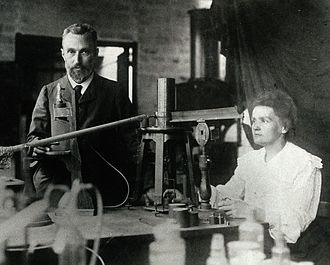
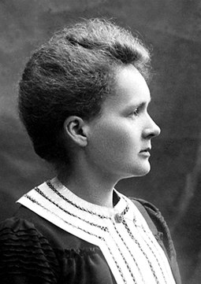
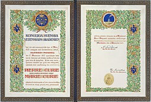
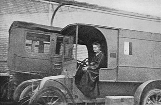
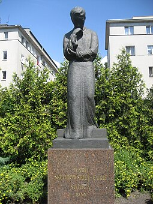
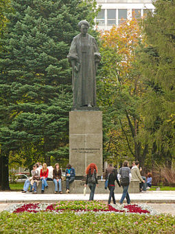

Maria Salomea Skłodowska-Curie[a] (Polish: [ˈmarja salɔˈmɛa skwɔˈdɔfska kʲiˈri] ⓘ; née Skłodowska; 7
November 1867 – 4 July 1934), known simply as Marie Curie (/ˈkjʊəri/ KURE-ee,[1] French: [maʁi kyʁi]),
was a Polish and naturalised-French physicist and chemist who conducted pioneering research on
radioactivity. She was the first woman to win a Nobel Prize, the first person to win a Nobel Prize
twice, and the only person to win a Nobel Prize in two scientific fields. Her husband, Pierre Curie, was
a co-winner of her first Nobel Prize, making them the first married couple to win the Nobel Prize and
launching the Curie family legacy of five Nobel Prizes. She was, in 1906, the first woman to become a
professor at the University of Paris.[2]
She was born in Warsaw, in what was then the Kingdom of Poland, part of the Russian Empire. She studied
at Warsaw's clandestine Flying University and began her practical scientific training in Warsaw. In
1891, aged 24, she followed her elder sister Bronisława to study in Paris, where she earned her higher
degrees and conducted her subsequent scientific work. In 1895, she married the French physicist Pierre
Curie, and she shared the 1903 Nobel Prize in Physics with him and with the physicist Henri Becquerel
for their pioneering work developing the theory of "radioactivity"—a term she coined.[3][4] In 1906,
Pierre Curie died in a Paris street accident. Marie won the 1911 Nobel Prize in Chemistry for her
discovery of the elements polonium and radium, using techniques she invented for isolating radioactive
isotopes. Under her direction, the world's first studies were conducted into the treatment of neoplasms
by the use of radioactive isotopes. She founded the Curie Institute in Paris in 1920, and the Curie
Institute in Warsaw in 1932; both remain major medical research centres. During World War I, she
developed mobile radiography units to provide X-ray services to field hospitals.
Early Life
Maria made an agreement with her sister, Bronisława, that she would give her financial assistance during
Bronisława's medical studies in Paris, in exchange for similar assistance two years later.[12][20] In
connection with this, Maria took a position first as a home tutor in Warsaw, then for two years as a
governess in Szczuki with a landed family, the Żorawskis, who were relatives of her father.[12][20]
While working for the latter family, she fell in love with their son, Kazimierz Żorawski, a future
eminent mathematician.[20] His parents rejected the idea of his marrying the penniless relative, and
Kazimierz was unable to oppose them.[20] Maria's loss of the relationship with Żorawski was tragic for
both. He soon earned a doctorate and pursued an academic career as a mathematician, becoming a professor
and rector of Kraków University. Still, as an old man and a mathematics professor at the Warsaw
Polytechnic, he would sit contemplatively before the statue of Maria Skłodowska that had been erected in
1935 before the Radium Institute, which she had founded in 1932.At the beginning of 1890, Bronisława—who a
few months earlier had married Kazimierz Dłuski, a Polish physician and social and political
activist—invited Maria to join them in Paris. Maria declined because she could not afford the university
tuition; it would take her a year and a half longer to gather the necessary funds.[12] She was helped by her
father, who was able to secure a more lucrative position again.[20] All that time she continued to educate
herself, reading books, exchanging letters, and being tutored herself.[20] In early 1889 she returned home
to her father in Warsaw.[12] She continued working as a governess and remained there until late 1891.
Paries Life

In late 1891, she left Poland for France.[23] In Paris, Maria (or Marie, as she would be known in France)
briefly found shelter with her sister and brother-in-law before renting a garret closer to the university,
in the Latin Quarter, and proceeding with her studies of physics, chemistry, and mathematics at the
University of Paris, where she enrolled in late 1891.[24][25] She subsisted on her meagre resources, keeping
herself warm during cold winters by wearing all the clothes she had. She focused so hard on her studies that
she sometimes forgot to eat.[25] Skłodowska studied during the day and tutored evenings, barely earning her
keep. In 1893, she was awarded a degree in physics and began work in an industrial laboratory of Gabriel
Lippmann. Meanwhile, she continued studying at the University of Paris and with the aid of a fellowship she
was able to earn a second degree in 1894.[12][25][c]
Skłodowska had begun her scientific career in Paris with an investigation of the magnetic properties of
various steels, commissioned by the Society for the Encouragement of National Industry.[25] That same year,
Pierre Curie entered her life: it was their mutual interest in natural sciences that drew them together.[26]
Pierre Curie was an instructor at The City of Paris Industrial Physics and Chemistry Higher Educational
Institution (ESPCI Paris).[12] They were introduced by Polish physicist Józef Wierusz-Kowalski, who had
learned that she was looking for a larger laboratory space, something that Wierusz-Kowalski thought Pierre
could access.[12][25] Though Curie did not have a large laboratory, he was able to find some space for
Skłodowska where she was able to begin work.
Pierre Curie and Marie Skłodowska-Curie, 1895
Their mutual passion for science brought them increasingly closer, and they began to develop feelings for
one another.[12][25] Eventually, Pierre proposed marriage, but at first Skłodowska did not accept as she was
still planning to go back to her native country. Curie, however, declared that he was ready to move with her
to Poland, even if it meant being reduced to teaching French.[12] Meanwhile, for the 1894 summer break,
Skłodowska returned to Warsaw, where she visited her family.[25] She was still labouring under the illusion
that she would be able to work in her chosen field in Poland, but she was denied a place at Kraków
University because of sexism in academia.[15] A letter from Pierre convinced her to return to Paris to
pursue a PhD.[25] At Skłodowska's insistence, Curie had written up his research on magnetism and received
his own doctorate in March 1895; he was also promoted to professor at the School.[25] A contemporary quip
would call Skłodowska "Pierre's biggest discovery".
New Element
In 1895, Wilhelm Röntgen discovered the existence of X-rays, though the mechanism behind their production
was not yet understood.[28] In 1896, Henri Becquerel discovered that uranium salts emitted rays that
resembled X-rays in their penetrating power.[28] He demonstrated that this radiation, unlike
phosphorescence, did not depend on an external source of energy but seemed to arise spontaneously from
uranium itself. Influenced by these two important discoveries, Curie decided to look into uranium rays as a
possible field of research for a thesis.
She used an innovative technique to investigate samples. Fifteen years earlier, her husband and his brother
had developed a version of the electrometer, a sensitive device for measuring electric charge.[28] Using her
husband's electrometer, she discovered that uranium rays caused the air around a sample to conduct
electricity. Using this technique, her first result was the finding that the activity of the uranium
compounds depended only on the quantity of uranium present.[28] She hypothesized that the radiation was not
the outcome of some interaction of molecules but must come from the atom itself.[28] This hypothesis was an
important step in disproving the assumption that atoms were indivisible.[28][29]
In 1897, her daughter Irène was born. To support her family, Curie began teaching at the École Normale
Supérieure.[23] The Curies did not have a dedicated laboratory; most of their research was carried out in a
converted shed next to ESPCI.[23] The shed, formerly a medical school dissecting room, was poorly ventilated
and not even waterproof.[30] They were unaware of the deleterious effects of radiation exposure attendant on
their continued unprotected work with radioactive substances. ESPCI did not sponsor her research, but she
would receive subsidies from metallurgical and mining companies and from various organizations and
governments.

Nobel Prizes

In December 1903 the Royal Swedish Academy of Sciences awarded Pierre Curie, Marie Curie, and Henri
Becquerel the Nobel Prize in Physics,[44] "in recognition of the extraordinary services they have rendered
by their joint researches on the radiation phenomena discovered by Professor Henri Becquerel."[23] At first
the committee had intended to honour only Pierre Curie and Henri Becquerel, but a committee member and
advocate for women scientists, Swedish mathematician Magnus Gösta Mittag-Leffler, alerted Pierre to the
situation, and after his complaint, Marie's name was added to the nomination.[45] Marie Curie was the first
woman to be awarded a Nobel Prize.[23]
Curie and her husband declined to go to Stockholm to receive the prize in person; they were too busy with
their work, and Pierre Curie, who disliked public ceremonies, was feeling increasingly ill.[43][45] As Nobel
laureates were required to deliver a lecture, the Curies finally undertook the trip in 1905.[45] The award
money allowed the Curies to hire their first laboratory assistant.[45] Following the award of the Nobel
Prize, and galvanized by an offer from the University of Geneva, which offered Pierre Curie a position, the
University of Paris gave him a professorship and the chair of physics, although the Curies still did not
have a proper laboratory.[23][40][41] Upon Pierre Curie's complaint, the University of Paris relented and
agreed to furnish a new laboratory, but it would not be ready until 1906.[45]
Caricature of Marie and Pierre Curie, captioned "Radium", in the London magazine Vanity Fair, December 1904
In December 1904, Curie gave birth to their second daughter, Ève.[45] She hired Polish governesses to teach
her daughters her native language, and sent or took them on visits to Poland.

World War I
During World War I, Curie recognised that wounded soldiers were best served if operated upon as soon as
possible.[57] She saw a need for field radiological centres near the front lines to assist battlefield
surgeons,[56] including to obviate amputations when in fact limbs could be saved.[58][59] After a quick
study of radiology, anatomy, and automotive mechanics, she procured X-ray equipment, vehicles, and auxiliary
generators, and she developed mobile radiography units, which came to be popularly known as petites Curies
("Little Curies").[56] She became the director of the Red Cross Radiology Service and set up France's first
military radiology centre, operational by late 1914.[56] Assisted at first by a military doctor and her
17-year-old daughter Irène, Curie directed the installation of 20 mobile radiological vehicles and another
200 radiological units at field hospitals in the first year of the war.[49][56] Later, she began training
other women as aides.[60]
In 1915, Curie produced hollow needles containing "radium emanation", a colourless, radioactive gas given
off by radium, later identified as radon, to be used for sterilizing infected tissue. She provided the
radium from her own one-gram supply.[60] It is estimated that over a million wounded soldiers were treated
with her X-ray units.[19][49] Busy with this work, she carried out very little scientific research during
that period.[49] In spite of all her humanitarian contributions to the French war effort, Curie never
received any formal recognition of it from the French government.[56]
Also, promptly after the war started, she attempted to donate her gold Nobel Prize medals to the war effort
but the French National Bank refused to accept them.[60] She did buy war bonds, using her Nobel Prize
money.[60] She said:
I am going to give up the little gold I possess. I shall add to this the scientific medals, which are quite
useless to me. There is something else: by sheer laziness I had allowed the money for my second Nobel Prize
to remain in Stockholm in Swedish crowns. This is the chief part of what we possess. I should like to bring
it back here and invest it in war loans. The state needs it. Only, I have no illusions: this money will
probably be lost.[57]
She was also an active member in committees of Polonia in France dedicated to the Polish cause.[61] After
the war, she summarized her wartime experiences in a book, Radiology in War (1919).[60]

Postwar Years
In 1920, for the 25th anniversary of the discovery of radium, the French government established a stipend
for her; its previous recipient was Louis Pasteur, who had died in 1895.[49] In 1921, she was welcomed
triumphantly when she toured the United States to raise funds for research on radium. Mrs. William Brown
Meloney, after interviewing Curie, created a Marie Curie Radium Fund and raised money to buy radium,
publicising her trip.[49][62][d]
In 1921, U.S. President Warren G. Harding received her at the White House to present her with the 1 gram of
radium collected in the United States, and the First Lady praised her as an example of a professional
achiever who was also a supportive wife.[2][64] Before the meeting, recognising her growing fame abroad, and
embarrassed by the fact that she had no French official distinctions to wear in public, the French
government offered her a Legion of Honour award, but she refused.[64][65] In 1922 she became a fellow of the
French Academy of Medicine.[49] She also travelled to other countries, appearing publicly and giving
lectures in Belgium, Brazil, Spain, and Czechoslovakia.[66]
Marie and daughter Irène, 1925
Led by Curie, the Institute produced four more Nobel Prize winners, including her daughter Irène
Joliot-Curie and her son-in-law, Frédéric Joliot-Curie.[67] Eventually it became one of the world's four
major radioactivity-research laboratories, the others being the Cavendish Laboratory, with Ernest
Rutherford; the Institute for Radium Research, Vienna, with Stefan Meyer; and the Kaiser Wilhelm Institute
for Chemistry, with Otto Hahn and Lise Meitner.[67][68]
In August 1922 Marie Curie became a member of the League of Nations' newly created International Committee
on Intellectual Cooperation.[69][10] She sat on the committee until 1934 and contributed to League of
Nations' scientific coordination with other prominent researchers such as Albert Einstein, Hendrik Lorentz,
and Henri Bergson.[70] In 1923 she wrote a biography of her late husband, titled Pierre Curie.[71] In 1925
she visited Poland to participate in a ceremony laying the foundations for Warsaw's Radium Institute.[49]
Her second American tour, in 1929, succeeded in equipping the Warsaw Radium Institute with radium; the
Institute opened in 1932, with her sister Bronisława its director.[49][64] These distractions from her
scientific labours, and the attendant publicity, caused her much discomfort but provided resources for her
work.[64] In 1930 she was elected to the International Atomic Weights Committee, on which she served until
her death.[72] In 1931, Curie was awarded the Cameron Prize for Therapeutics of the University of
Edinburgh.[73]
Death
Curie visited Poland for the last time in early 1934.[15][74] A few months later, on 4 July 1934, she died
aged 66 at the Sancellemoz sanatorium in Passy, Haute-Savoie, from aplastic anemia believed to have been
contracted from her long-term exposure to radiation, causing damage to her bone marrow.[49][75]
The damaging effects of ionising radiation were not known at the time of her work, which had been carried
out without the safety measures later developed.[74] She had carried test tubes containing radioactive
isotopes in her pocket,[76] and she stored them in her desk drawer, remarking on the faint light that the
substances gave off in the dark.[77] Curie was also exposed to X-rays from unshielded equipment while
serving as a radiologist in field hospitals during the First World War.[60] When Curie's body was exhumed in
1995, the French Office de Protection contre les Rayonnements Ionisants (OPRI) "concluded that she could not
have been exposed to lethal levels of radium while she was alive". They pointed out that radium poses a risk
only if it is ingested, and speculated that her illness was more likely to have been due to her use of
radiography during the First World War.[78]
She was interred at the cemetery in Sceaux, alongside her husband Pierre.[49] Sixty years later, in 1995, in
honour of their achievements, the remains of both were transferred to the Paris Panthéon. Their remains were
sealed in a lead lining because of the radioactivity.[79] She became the second woman to be interred at the
Panthéon (after Sophie Berthelot) and the first woman to be honoured with interment in the Panthéon on her
own merits.[10]
Because of their levels of radioactive contamination, her papers from the 1890s are considered too dangerous
to handle.[80] Even her cookbooks are highly radioactive.[81] Her papers are kept in lead-lined boxes, and
those who wish to consult them must wear protective clothing.[81] In her last year, she worked on a book,
Radioactivity, which was published posthumously in 1935.[

Legacy

The physical and societal aspects of the Curies' work contributed to shaping the world of the twentieth and
twenty-first centuries.[82] Cornell University professor L. Pearce Williams observes:
The result of the Curies' work was epoch-making. Radium's radioactivity was so great that it could not be
ignored. It seemed to contradict the principle of the conservation of energy and therefore forced a
reconsideration of the foundations of physics. On the experimental level the discovery of radium provided
men like Ernest Rutherford with sources of radioactivity with which they could probe the structure of the
atom. As a result of Rutherford's experiments with alpha radiation, the nuclear atom was first postulated.
In medicine, the radioactivity of radium appeared to offer a means by which cancer could be successfully
attacked.[38]
In addition to helping to overturn established ideas in physics and chemistry, Curie's work has had a
profound effect in the societal sphere. To attain her scientific achievements, she had to overcome barriers,
in both her native and her adoptive country, that were placed in her way because she was a woman.[15]
She was known for her honesty and moderate lifestyle.[23][82] Having received a small scholarship in 1893,
she returned it in 1897 as soon as she began earning her keep.[12][31] She gave much of her first Nobel
Prize money to friends, family, students, and research associates.[15] In an unusual decision, Curie
intentionally refrained from patenting the radium-isolation process so that the scientific community could
do research unhindered.[83][e] She insisted that monetary gifts and awards be given to the scientific
institutions she was affiliated with rather than to her.[82] She and her husband often refused awards and
medals.[23] Albert Einstein reportedly remarked that she was probably the only person who could not be
corrupted by fame
Commemoration and cultural depictions
As one of the most famous scientists in history, Marie Curie has become an icon in the scientific world and
has received tributes from across the globe, even in the realm of pop culture.[84] She also received many
honorary degrees from universities across the world.[64]
Marie Curie was the first woman to win a Nobel Prize, the first person to win two Nobel Prizes, the only
woman to win in two fields, and the only person to win in multiple sciences.[85] Awards and honours that she
received include:
Nobel Prize in Physics (1903, with her husband Pierre Curie and Henri Becquerel)[23]
Davy Medal (1903, with Pierre)[66][86]
Matteucci Medal (1904, with Pierre)[86]
Actonian Prize (1907)[87]
Elliott Cresson Medal (1909)[88]
Legion of Honour (1909, rejected)[89]
Nobel Prize in Chemistry (1911)[15]
Civil Order of Alfonso XII (1919)[90]
Franklin Medal of the American Philosophical Society (1921)[91]
Order of the White Eagle (2018, posthumously)[92]
Entities that have been named after Marie Curie include:
The curie (symbol Ci), a unit of radioactivity, is named in honour of her and Pierre Curie (although the
commission which agreed on the name never clearly stated whether the standard was named after Pierre, Marie,
or both).[93]
The element with atomic number 96 was named curium (symbol Cm).[94]
Three radioactive minerals are also named after the Curies: curite, sklodowskite, and cuprosklodowskite.[95]
The Marie Skłodowska-Curie Actions fellowship program of the European Union for young scientists wishing to
work in a foreign country[96]
In 2007, a metro station in Paris was renamed to honour both of the Curies.[95]
The sole Polish nuclear reactor in operation, the research reactor Maria[97]
The 7000 Curie asteroid[95]
Marie Curie, a registered charitable organisation in the United Kingdom[98]
The IEEE Marie Sklodowska-Curie Award, an international award presented for outstanding contributions to the
field of nuclear and plasma sciences and engineering, was established by the Institute of Electrical and
Electronics Engineers in 2008.[99]
The Marie Curie Medal, an annual science award established in 1996 and conferred by the Polish Chemical
Society[100]
The Marie Curie–Sklodowska Medal and Prize, an annual award conferred by the London-based Institute of
Physics for distinguished contributions to physics education[101]
Maria Curie-Skłodowska University in Lublin, Poland[102]
Pierre and Marie Curie University in Paris
Maria Skłodowska-Curie National Research Institute of Oncology in Poland
École élémentaire Marie-Curie in London, Ontario, Canada; Curie Metropolitan High School in Chicago, United
States; Marie Curie High School in Ho Chi Minh City, Vietnam; Lycée français Marie Curie de Zurich,
Switzerland; see Lycée Marie Curie for a list of other schools named after her
Rue Madame Curie in Beirut, Lebanon.
Numerous biographies are devoted to her, including:
Ève Curie (Marie Curie's daughter), Madame Curie, 1938.
Françoise Giroud, Marie Curie: A Life, 1987.
Susan Quinn, Marie Curie: A Life, 1996.
Barbara Goldsmith, Obsessive Genius: The Inner World of Marie Curie, 2005.[103]
Lauren Redniss, Radioactive: Marie and Pierre Curie, a Tale of Love and Fallout, 2011,[104] adapted into the
2019 British film.
Marie Curie has been the subject of a number of films:
1943: Madame Curie, a U.S. Oscar-nominated film by Mervyn LeRoy starring Greer Garson.[71]
1997: Les Palmes de M. Schutz, a French film adapted from a play of the same title, and directed by Claude
Pinoteau. Marie Curie is played by Isabelle Huppert.[105]
2014: Marie Curie, une femme sur le front, a French-Belgian film, directed by Alain Brunard [fr] and
starring Dominique Reymond.
2016: Marie Curie: The Courage of Knowledge, a European co-production by Marie Noëlle starring Karolina
Gruszka.
2016: Super Science Friends, an American Internet animated series created by Brett Jubinville featuring Hedy
Gregor as Marie Curie.
2019: Radioactive, a British film by Marjane Satrapi starring Rosamund Pike.
Curie is the subject of the 2013 play False Assumptions by Lawrence Aronovitch, in which the ghosts of three
other women scientists observe events in her life.[106] Curie has also been portrayed by Susan Marie
Frontczak in her play, Manya: The Living History of Marie Curie, a one-woman show which by 2014 had been
performed in 30 U.S. states and nine countries.[107] Lauren Gunderson's 2019 play The Half-Life of Marie
Curie portrays Curie during the summer after her 1911 Nobel Prize victory, when she was grappling with
depression and facing public scorn over the revelation of her affair with Paul Langevin.
Curie has appeared on more than 600 postage stamps in many countries across the world.[108][109]
Between 1989–1996, she was featured on a 20,000-zloty banknote designed by Andrzej Heidrich.[110] In 2011, a
commemorative 20-zloty banknote depicting Curie was issued by the National Bank of Poland on the 100th
anniversary of the scientist receiving the Nobel Prize in Chemistry.[111]
In 1994, the Bank of France issued a 500-franc banknote featuring Marie and Pierre Curie.[112] As of the
middle of 2024, Curie is depicted on French 50 euro cent coins to commemorate her impact on French history.